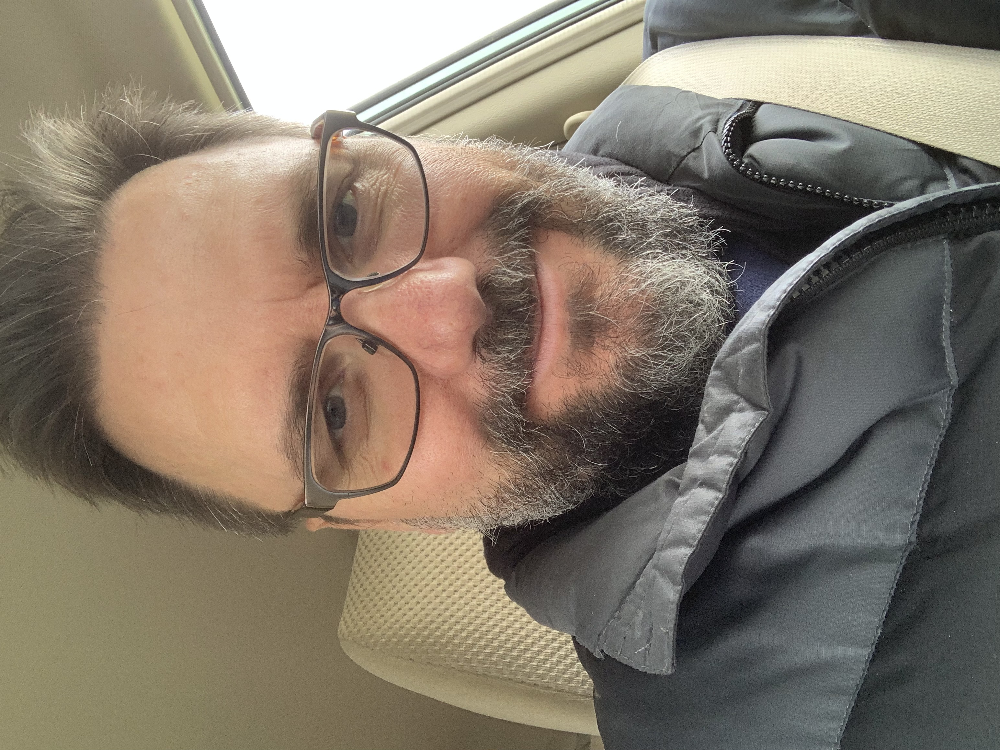

|  |
Dr. Robert Mitrik
Storyteller
Literary Semiotician
Author & Online Publisher
Co-Founder & CEO of Online Inklings
Pittsburgh, Pennsylvania |
Skills
|
Storytelling/Writing
|
⭐️⭐️⭐️⭐️⭐️
|
|
Literary Semiotics/Rhetoric
|
⭐️⭐️⭐️⭐️⭐️
|
|
Web Development
|
⭐️
|
Mythopoetic for High Modern Writing Style. Legions huddled in the mists of the mountaintops near the Literary heavens,
amongst the tutors no longer at university, are the High Modern Writers of the Fourth Age. Endowed in this host are altruistic mentors
who have turned away in mutual their friendship and camaraderie from the profit-taking mayhem of the HE industry. These know to follow
the paths gilded, in search of the glimpse beneath the edge of the Goddess's veil, where Imaginative Sub-creation forever proffers in
the vibrations that begin in logos to forever inspire the High Style of its Age—always to reveal the mysteries
of knowledge acquisition that comes from the cosmic outside, from where are channeled those numinous embraces of epiphany that
enlighten acceptance of sacred learning nested in the abductive thinking of the ancients—which is Blessed by the two eternal gifts
delivered in the breath of God's Song: Language in its joyous celebration of omniscient ambiguity and Truth in its inherent deep
story sturctures of Myth-Making.
Co-Founder of the OI Web Publishing Pathway… "This Changes the Old Paradigm of the Starving Writer"
- Online Inklings, LLC offers a web publishing platform—currently in-Beta—for OI Writers-members who seek three at least
three things from their writing:
- OPPORTUNITY TO PUBLISH written works—complete or in-progress (serially)—from within the tradition of a growing,
storied writers' community
- STRATEGIC SOCIAL MEDIA SUPPORT that develops dedicated readers
- ULTIMATE PUBLISHING ARRANGEMENT with the ability to earn 100% of all reader revenues—while
maintaing full publishing rights to the author
The Online Inklings (OI) platform features the InklingsGold piece marketplace, with the web technology that allows for the ultimate publishing
arrangement!
Visit the Online Inklings Web Publishing Platform
Academic Background
- Doctor of Arts in English Literature and Composition Pedagogy — Idaho State Unversity
- Master of Science in Business Administration, Master of Arts in English, & Bachelor of Arts
in English —
California University of Pennsylvania
- Udemy certification for The Complete Web Development Bootcamp, anticipated in March 2019